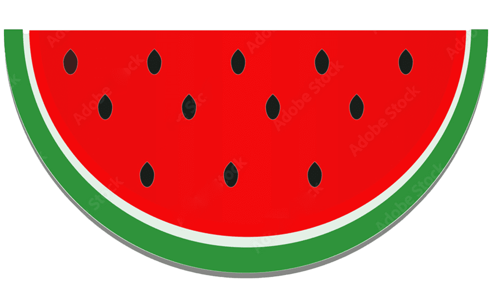

<nav class="navbar navbar-expand-lg bg-body-tertiary">
    <div class="container-fluid">
        <a class="navbar-brand" routerLink="" routerLinkActive="router-link-active">
            
            <h3 class="brand-header">Tarvooz</h3>
        </a>
        <button class="navbar-toggler" type="button" data-bs-toggle="collapse" data-bs-target="#navbarSupportedContent"
            aria-controls="navbarSupportedContent" aria-expanded="false" aria-label="Toggle navigation">
            <span class="navbar-toggler-icon"></span>
        </button>
        <div class="collapse navbar-collapse" id="navbarSupportedContent">
            <button class="btn btn-danger categories-btn" data-bs-toggle="collapse" data-bs-target="#flush-collapseOne"
                aria-expanded="false" aria-controls="flush-collapseOne">Kategorialar</button>
            <form class="d-flex search-box" role="search">
                <input class="form-control me-2" type="search" placeholder="Search" aria-label="Search">
                <button class="btn btn-outline-success" type="submit">Qidirish</button>
            </form>
        </div>
    </div>
</nav>

<div class="accordion accordion-flush" id="accordionFlushExample">
    <div class="accordion-item">
        <div id="flush-collapseOne" class="accordion-collapse collapse" data-bs-parent="#accordionFlushExample">
            <div class="accordion-body">
                @for (category of categories; track $index) {
                    <button type="button" class="btn btn-outline-secondary category-btn">{{category["name"]}}</button>
                }
            </div>
        </div>
    </div>
</div>